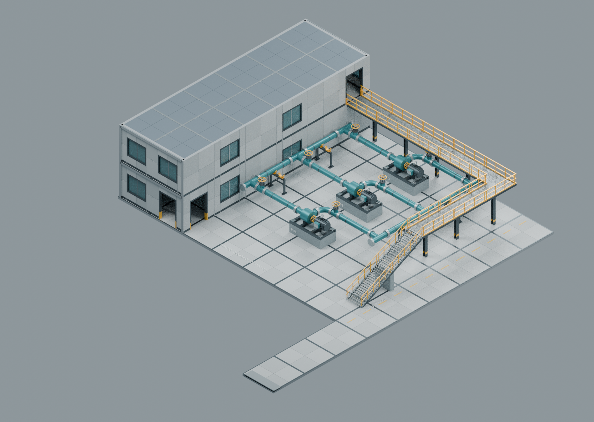
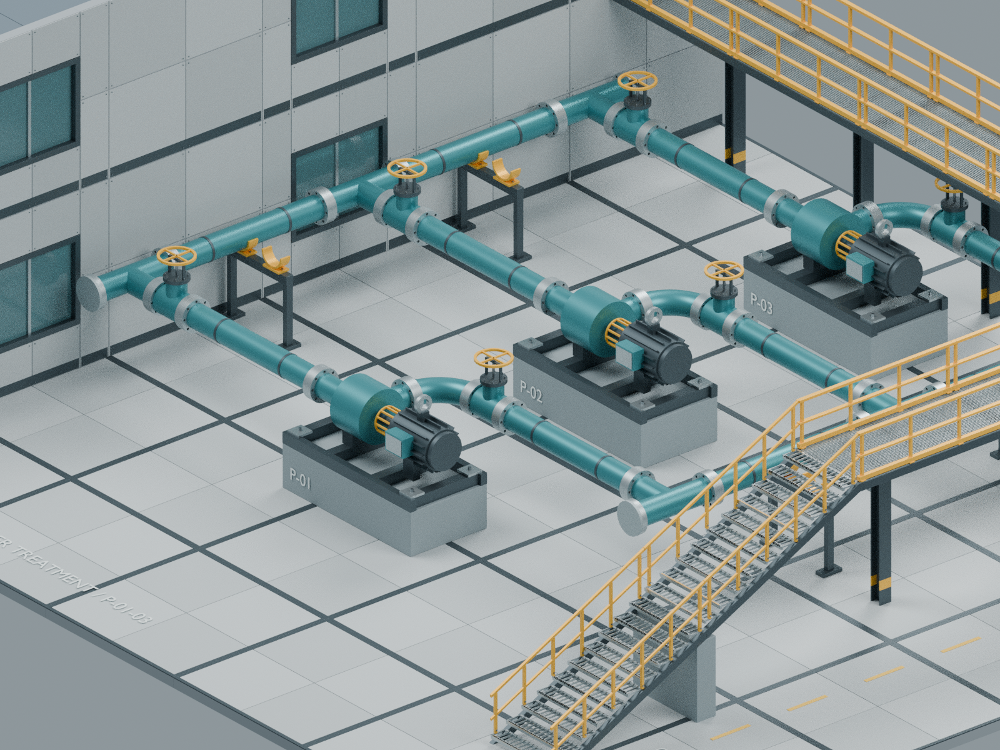
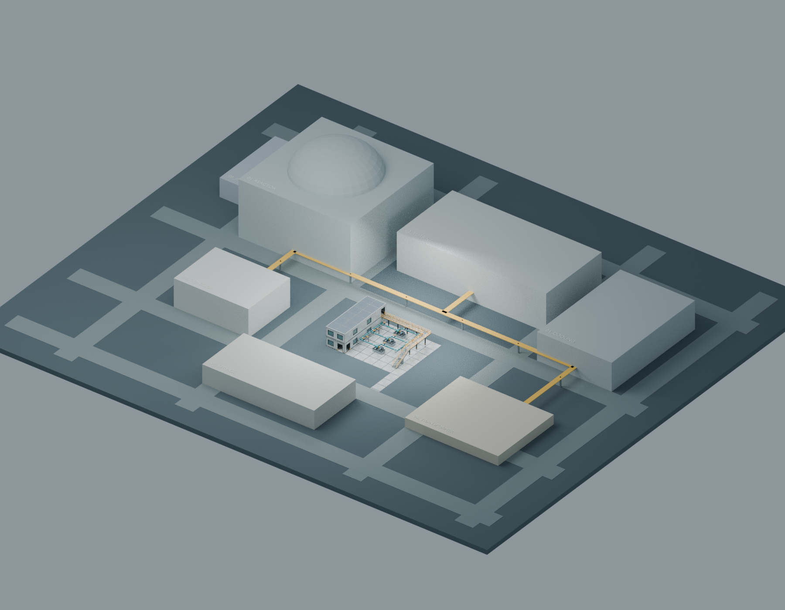
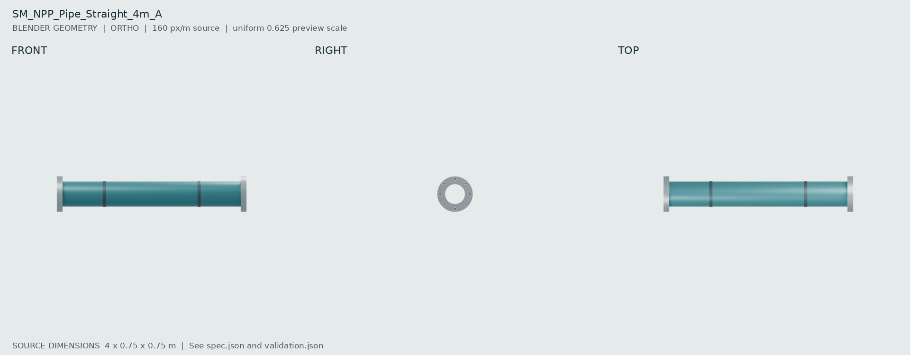
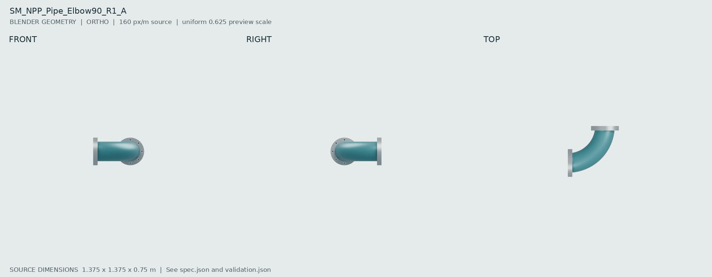
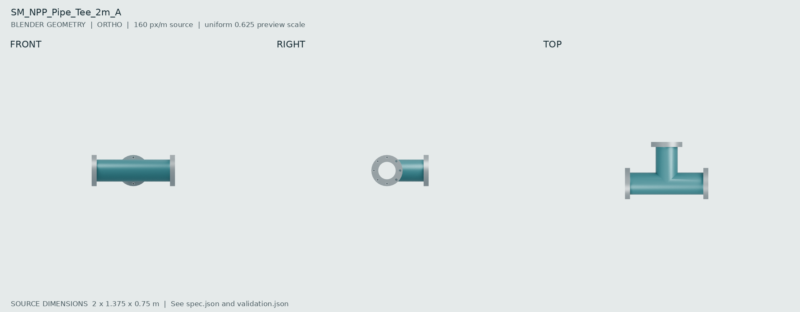
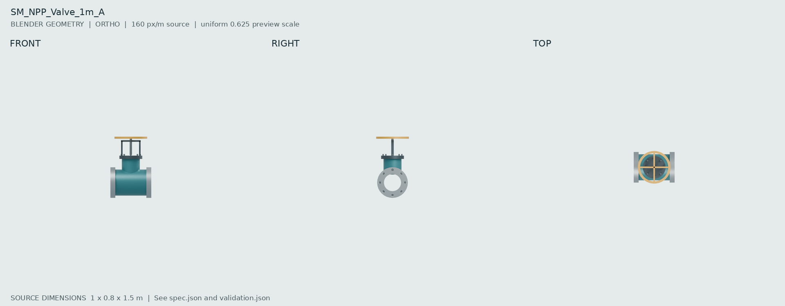
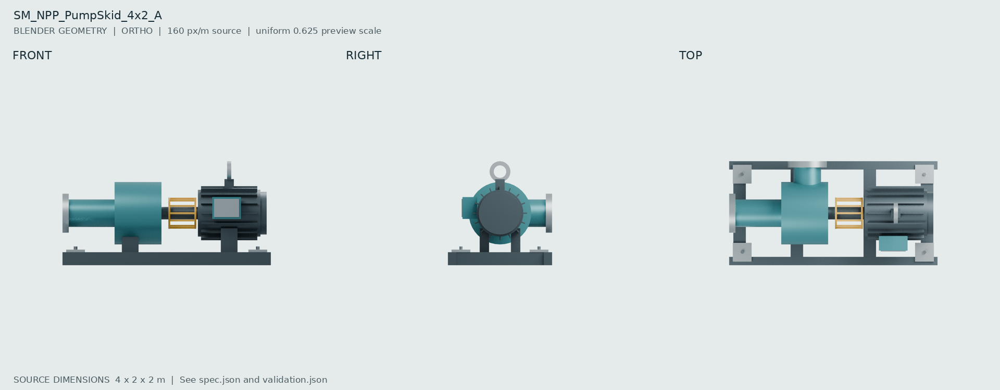

ORIGINAL INDUSTRIAL ENVIRONMENT / BATCH 0304 / Pump & Water Treatment
原始总图中 32×24 m 的泵区已替换为真实模块组合：三组泵、主管与支架、两层维护附房、Z=4 m 连廊、外楼梯和南侧接路平台。其余 7 区仍为灰盒。当前基础 PBR，非最终 AAA 美术。
交付说明 · 独立泵区 Blender · 替换后的全站上下文 Blender · 区域规格 · 验收摘要

泵组与接口近景

全站上下文：仅 04_PUMP 已替换

SM_NPP_Pipe_Straight_4m_A
[4, 0.75, 0.75] m · 10,432 triangles · PASS

Blender · FBX · GLB · Spec · AI appearance reference
SM_NPP_Pipe_Elbow90_R1_A
[1.375, 1.375, 0.75] m · 12,048 triangles · PASS

Blender · FBX · GLB · Spec · AI appearance reference
SM_NPP_Pipe_Tee_2m_A
[2, 1.375, 0.75] m · 13,196 triangles · PASS

Blender · FBX · GLB · Spec · AI appearance reference
SM_NPP_Valve_1m_A
[1, 0.8, 1.5] m · 12,688 triangles · PASS

Blender · FBX · GLB · Spec · AI appearance reference
SM_NPP_PumpSkid_4x2_A
[4, 2, 2] m · 18,240 triangles · PASS

Blender · FBX · GLB · Spec · AI appearance reference